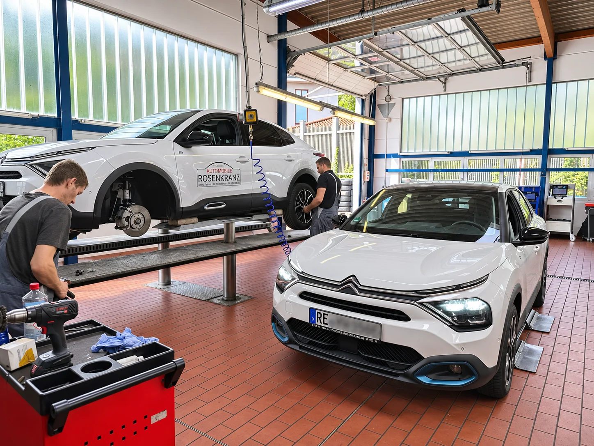
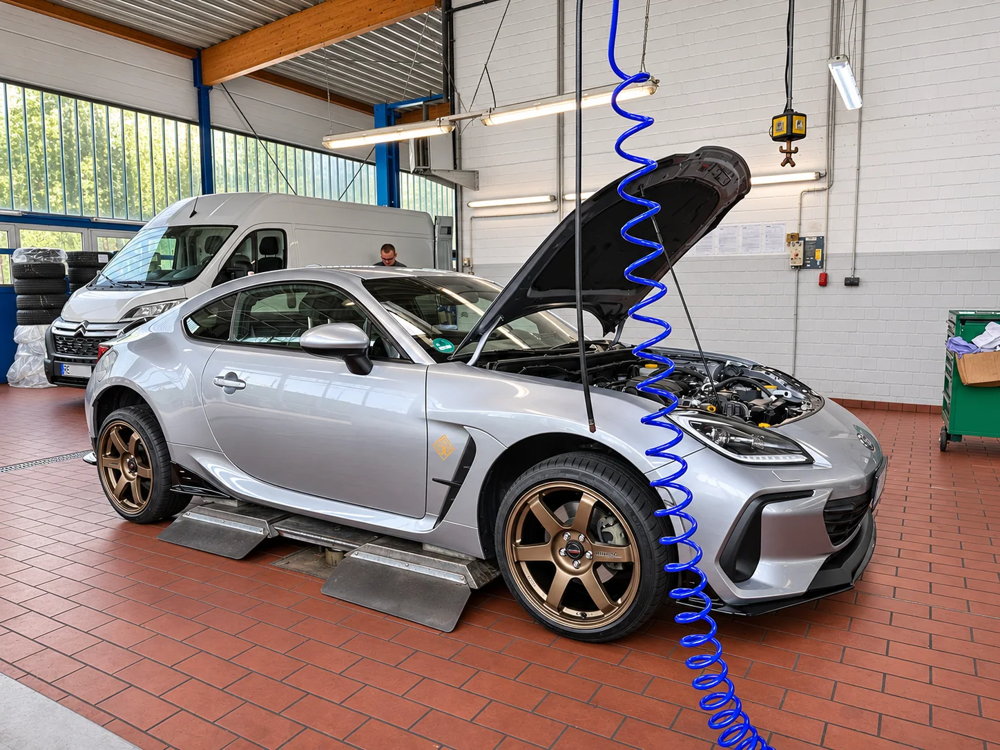

Werkstatt und Teileverkauf
Service, der Sie weiterbringt.
Unser Werkstattteam in Recklinghausen betreut Citroën, Subaru und weitere Fahrzeuge: von Inspektion und Wartung über Diagnose bis Räder- und Reifenservice.
Leistungen entdeckenUnser Werkstattteam begleitet Sie von der regelmäßigen Wartung bis zur Diagnose. Wir besprechen die Arbeiten verständlich und kümmern uns um Ihr Fahrzeug mit Erfahrung und Sorgfalt – für alle Antriebe vom Verbrenner bis zum Elektrofahrzeug.
Regelmäßige Inspektionen und Wartungen nach Herstellervorgaben, ebenso UVV-Prüfungen, Klimawartungen und Batterietests.
Fehlersuche und Reparaturen mit moderner Diagnosetechnik – wir erklären Ihnen die nächsten Schritte vorab.
Radwechsel und Einlagerung sowie Beratung zu Winter-, Allwetter-, Sommer- und Sportreifen und passenden Felgen.
Ob Haftpflicht- oder Kaskoschaden: Wir übernehmen die Abwicklung. Gutachter von TÜV NORD und DEKRA sowie eine Verkehrsrechtskanzlei gehören für einen möglichst reibungslosen Ablauf zu unserem Netzwerk.
TÜV NORD und DEKRA kümmern sich in unserem Haus um Haupt- und Abgasuntersuchungen, Gasprüfungen, State-of-Health-Prüfungen der Fahrbatterie sowie Eintragungen.
Von Fußmatten über Tuning und Motorsport bis zu Offroad und Camping – wir beraten Sie zu passenden Teilen und Zubehör.
